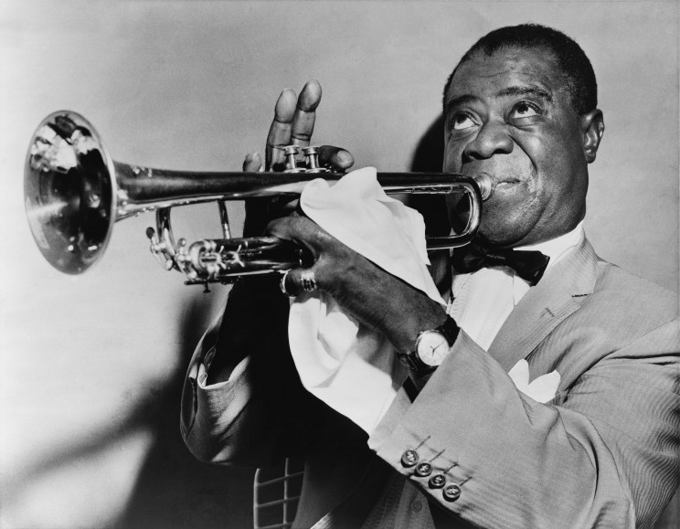

Trumpet
Trumpets are great instruments and typically carry the melody of the song, they can also play higher support parts.
Euphonium
A Euphonium is a great instrument for supporting parts and lower solos. The instrument is nearly the same as a Baritone the only difference is how the tubes taper.

Tuba
Tubas are pretty much only good for supporting low parts, occasionally they have a solo part and when they do it is usually pretty crazy how well they play it.

Marching Baritone
This is a baritone meant for marching it is pretty much the same as a euphonium and a normal baritone except it is shaped more like a trumpet than a tuba in this form.

Piccalo Trumpet
Great ear piercing trumpet, it is the highest pitched form of trumpet and is extremly loud. Great for really really high parts in music, not very common.
.jpg)
Baritone
Same as the other 3 euphoniums and Baritones
Louis Armstrong
Great trumpet player really famous. Often thought of as one of the greatest trumpet players.
 Learn More...